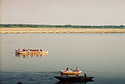
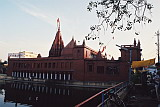

4/11/2000
You are here: Home > Travelogues > India 2000 > 4/11/2000Indian Update
Well here's yet another exciting update of our adventures. Perhaps not so exciting.
Hmm let's see...
We last left our two adventurers in the lovely mountainside town of Dharamsala... The next day saw the start of Diwali, which is a pretty big festival over here, sort of equivalent to christmas or new year's. It actually marks the official start of winter, and involves people prettying up their houses with flowers, lights and other decorations. And of course, fireworks.
Yes, you remember fireworks, those things that got banned for causing too much fun (and too many new yachts for eye doctors). But they're alive and well over here, especially the variety that go 'bang'. Actually some go bang, some go BANG and some are probably just dynamite with a label. Ok, I exaggerate. But lots of loud noises ensued in the evening, it was quite fun.
I managed to set fire to my shoe, not from playing with fireworks (sing-song voice: "Jana doesn't like fireworks" - at least when I suggest getting some of our own), but from not noticing that our hotel manager had placed small candles at the bottom of the balcony railings. Ergo I trod in one for some time, until I noticed the burning smell. Oh well, Volleys are cheap. And mine have character now.
After that, we commenced our exiting journey to Varanasi. This can be summarised thus:
11 hours bus ride. Arrive Delhi 4:30am or something horrid like that.
3 hours waiting for train ticket office to open
1 hour getting ticket
4 hours waiting for train
19 hours on train.
The train wasn't so bad actually, they have that marvel of modern invention over here known as the sleeper carridge. Seems Australia could do with some pointers.
So anyway, we arrived in Varanasi. Got taken to a place that sounded like where we wanted to stay, but turned out to be an imitator with a similar name. Decided once and for all never to trust and Indian taxi driver again.
But we were too tired to care. Decided to stay a day or so and then move, and see the sights etc. Varanasi is much nicer than Delhi. You can actually breathe here for starters. And not nearly as many people hassling you to buy something.
In fact my only complaint would be that there seems to be a whole heap of rotten luck floating around in the air - sunday night we inhaled a prize dose and Jana got sick again, quite sick in fact, and as she was getting very dehydrated we had to go off to hospital and get her on an IV drip. Fun fun fun. This of course at 4 in the morning.
They pumped her full of fluids and antibiotics and other such goodness, and she's fine now. The IV was rather painful though. But the fun and games didn't end there; the last night we stayed there, *I* got sick with the same thing, and so got the same treatment. At least we were already there.
So all up it's been a week of much excitement. Least the hospital had a TV. We spent most of the time watching "Animal Planet". I love animals, but if I see one more dog or horse documentary soon I'll most likely do something best described as 'colourful'. Suppose it could have been worse, could have been Indian MTV. There's some odd pop songs here. But still better than bOyZ2MeN or some other hideous chart crap.
So all is well now. Of course you can all feel free to take pity on us and charge our bank accounts with much booty, if you are that way inclined. Hmm, thought not. Ok fine, no presents for anyone. :)
Anyway time to sign off. With luck we'll actually get to see some of the city tomorrow! And then it's off to Agra and the Taj.
One final note to those that care - write to me you bastards!!
All images in this gallery:
|  F1000022.JPG 51.4 KB |
 F1000025.JPG 74.63 KB |
{kind=link}
{kind=link}